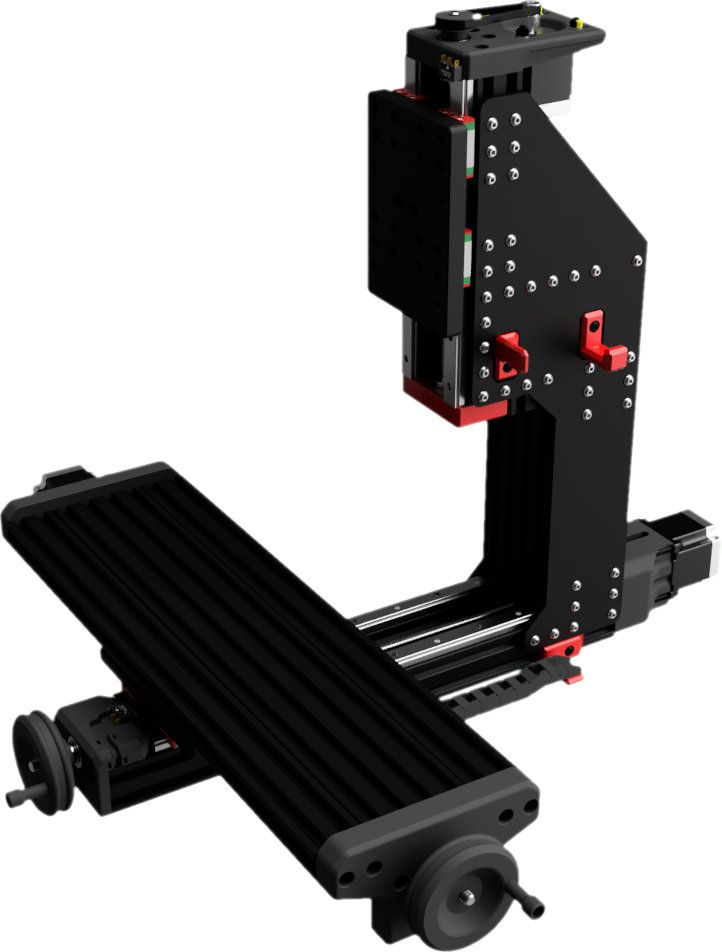
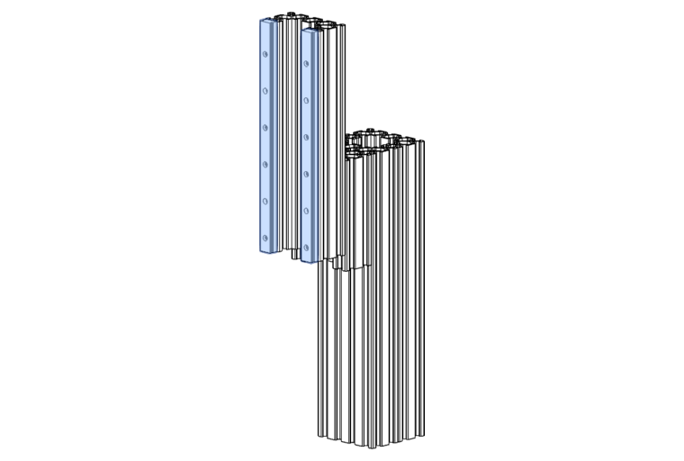
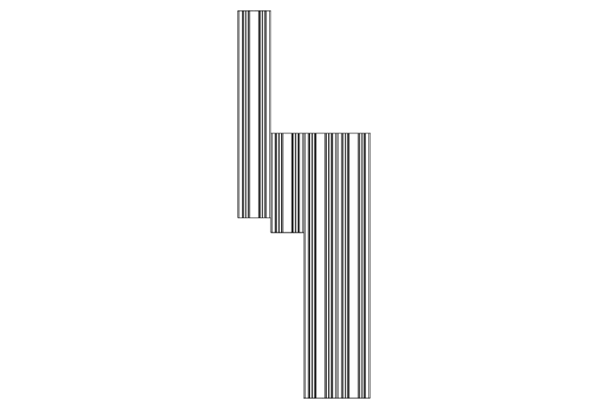
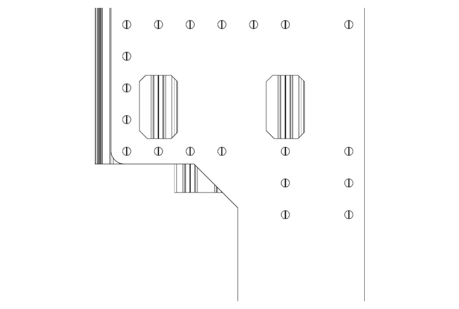
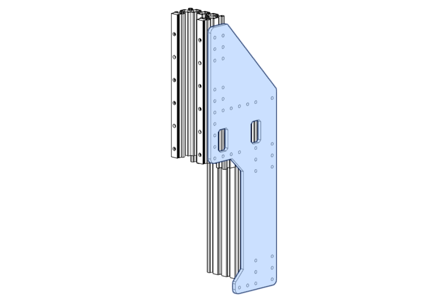
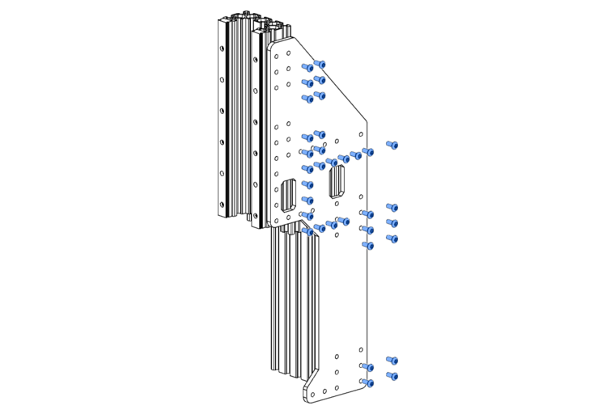
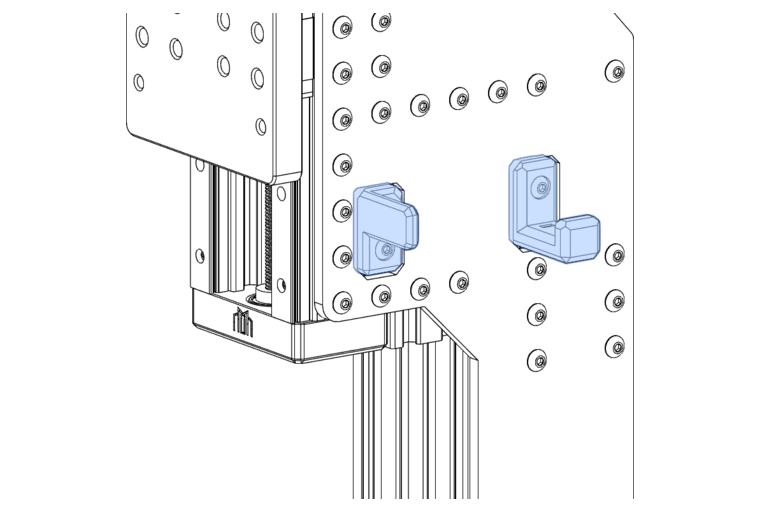

FMJ Assembly

FMJ
The Full Metal Jacket is an optional reinforcement for the Z-Axis that improves its' rigidity and strength significantly. If you're looking to cut metals, then you should think about installing the FMJ from the get-go.
Standard Assembly
The following information applies only if you are building your Milo with FMJ plates. If you do not have FMJ plates and are using 3D printed column joining plates, please follow Installing the Column Plates instead.
FMJ Sourcing
FMJ's cannot be made on Milo due to their size - so you will need to acquire them by different means.
If self-sourcing, FMJ's should be laser-cut, ideally from Mild Steel, which will give you the best bang-for-your-buck.
FMJ's can be used to extend your Z clearance, which is the maximum work-piece and work-holding height that is able to move under the Z-column overhang. The stock clearance is 60mm, and with the maximum size FMJ this can be extended to 120mm.
If using the FMJ to extend your clearance, you will need to increase the length of the A and B extrusions (detailed in Identifying Extrusions) by the difference from the standard clearance. For 120mm clearance, you will need 320mm C-Beams (120-60 + 260 = 320mm).
The designs are available in the User Mods Repository - the Fusion360 file is parametric, so you will need to check / set your parameters for length and bolt hole sizes before exporting for cutting.
Services like SendCutSend in the US or Fractory in the EU can produce FMJ's at a decent price, and they offer discounts for bulk runs.
Remember that a set of FMJ's contains two plates, one for either side of the Z column.
If obtaining these plates with a non-durable surface finish (Mild Steel for example), then you will need to paint the raw FMJ's to stop them corroding - we find sprayed truck-bed liner or appliance enamel provides a suitable coating durability, but feel free to experiment with other high-durability coatings.
Identifying Extrusions
This section of the build contains a number of C-beams that are close together. To help you identify which parts are which, lay out your extrusions like the diagram shown below. The next steps will then highlight which extrusions are used for each step.
Components Required
A: Openbuilds 4080x260mm C-Beam
B: Openbuilds 4080x260mm C-Beam
C: Openbuilds 4080x250mm C-Beam
D: Openbuilds 4080x120mm C-Beam

Extrusions A and B are the main Z-column extrusions.

Z-Axis Rail Assembly
Components Required
8 x M3x10mm SHCS
2 x MGN15 Rail 250mm
Install the Z rails with only the lower carriages installed onto the C extrusion using M3x10mm SHCS.
Make sure the end-most and centre-most bolt holes in each rail are used.
Use printed rail alignment guides to make sure the rails are aligned.

Tip
You can use the rail alignment guides to stop the lower carriages from falling off the vertical rail!
Column Assembly
Place extrusions A and B facing each other, creating an internal channel. This is where the ballast box can be installed (later, calm down cowboy!).
Select extrusion D.

Place extrusion D at the top of the column with the channel facing outwards (away from extrusions A and B).
Select extrusion C.

Place extrusion C on the front of extrusion D, again with the channel (and rails!) facing outwards.

Tip
The lower edge of extrusion C should be 18mm above the lower edge of extrusion D, making room for the lower bearing block.

FMJ Installation
Components Required
32 x M5x10mm BHCS
2 x FMJ Plate (1)
- See FMJ Sourcing above.
Warning
The length of the M5 BHCS bolts used to attach the FMJ to the column depends on the thickness of your FMJ. The bolts specified here are for a plate thickness of 6mm, which is currently the most common choice, and is supplied as standard with the LDO kit.
If your FMJ plates are not 6mm thick, you should aim for an M5 BHCS that is 4-6mm longer than your plates are thick.
Take one of your FMJ plates and line up the bottom edge of the FMJ shoulder with the bottom edge of the C extrusion.


Install all but the bottom 4 M5x12mm BHCS.

BE SAFE, LOCK IT!
These machines vibrate an immense amount when in use, and fasteners are bound to back out. Don't be afraid to add a little bit of medium-strength thread-lock to all your screws to avoid this problem.
Hint
If using spring T-nuts for assembly, having a thin, long and semi-flexible tool to help guide the nuts into place is a godsend!
Turn your half-assembled column over and repeat with the other FMJ plate. Take care to line the second FMJ up with the first!
Hint
Loosely bolt the second FMJ into place, then push the base of the FMJ's against a known-flat surface so that they are both flush. Tighten the second FMJ while in this position so that the plates stay aligned.
Note
The cut-outs in the FMJ are for fitting cable hook and drag-chain mounts. This can be done now, or later when routing cabling and drag-chains.
